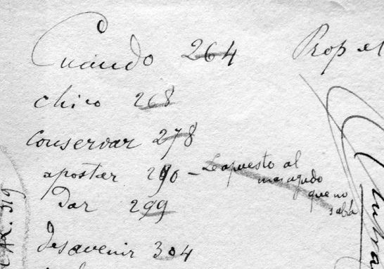

WEB Cuervo 2.0. Es un proyecto enfocado en los desarrollos de la web 2.0, que fortaleció las acciones del Año Rufino José Cuervo a través de una cuenta de twitter (@YoRufino) y una página de Facebook (Rufino Jota Cuervo). La experiencia Cuervo 2.0., acercó la figura de Rufino José Cuervo a los nativos digitales para promover procesos de apropiación patrimonial y de recuperación de la memoria histórica en la Internet garantizando el acceso digital a contenidos que muchas veces, no son accesibles para un gran público.
